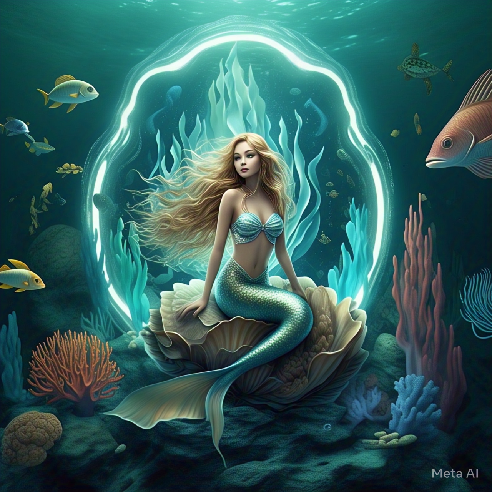
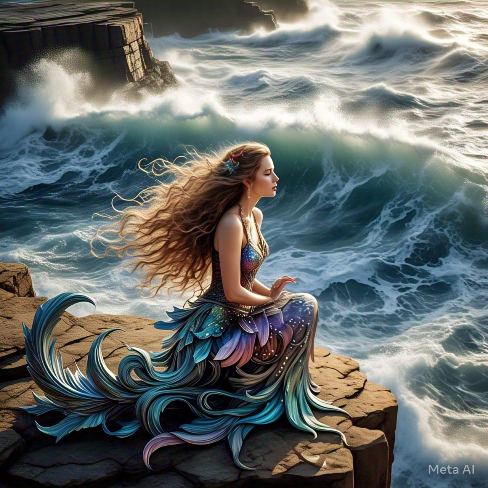

Mermaid
Mermaids are mythological creatures human imagination for centuries. they are typically depicted as having upper body of a woman and the lower body of a fish.

Sirens
Sirens are mythological creatures that originated in greek mythology. they are often depicted as half-woman, half-bird creatures, but in modern times, they are associated with mermaids.

Mami wata
In caribbean and afican mythology they are powerful mermaid- like spirit ,associated with wealth and danger.They can take the form of a mermaid also a snake .